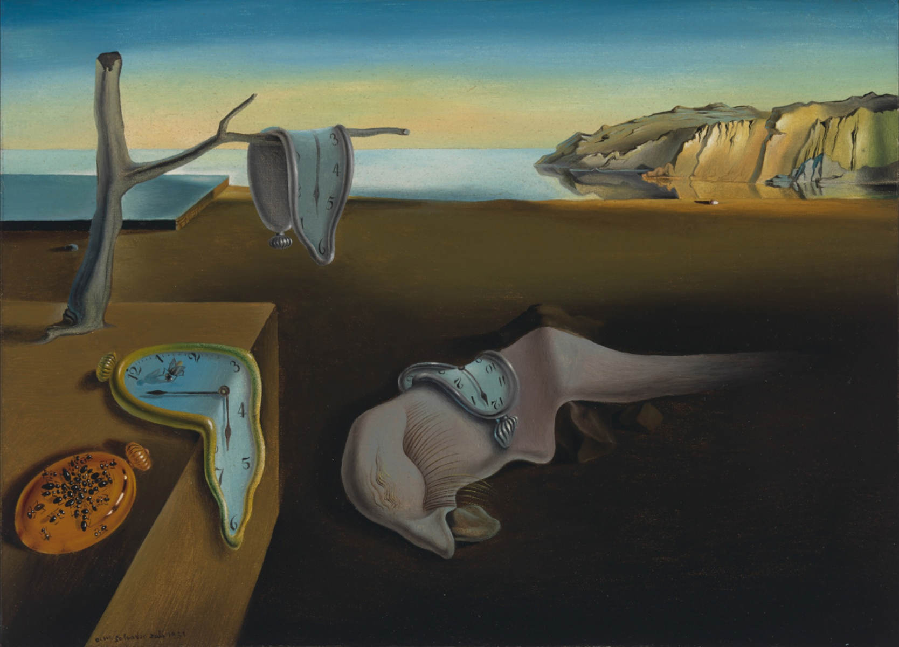

La persistenza della memoria di Salvator Dalì
HOME INFO Desctrizione
All’interno di un paesaggio fantastico sono disposti alcuni oggetti irreali. Dominano la scena alcuni orologi dalla consistenza deformata. Sono chiamati, infatti, orologi molli. Pur segnando ancora il tempo, sembrano aver perso la loro solidità. Sopra al parallelepipedo dipinto a sinistra, un orologio è poggiato per una metà sul piano. Sopra di esso, si è appoggiata una mosca che crea una lunga ombra verso le dodici. La metà inferiore, invece, pende mollemente lungo il fianco del solido. Un altro orologio, con la cassa però chiusa, è poggiato più a sinistra. Su di esso alcune formiche, grandi e piccole, creano un motivo decorativo.
Verso il bordo posteriore del solido, un esile tronco morto si alza verso il cielo e un suo ramo di ulivo sostiene un altro orologio che pende verso il basso. Sul terreno, un essere mostruoso composto da un grande occhio chiuso, con lunghe ciglia, sopracciglia e la lingua al di fuori porta come una groppa un altro orologio. Verso il fondo dello spazio rappresentato, si apre uno specchio d’acqua. A destra, alcuni faraglioni avanzano verso l’acqua. A sinistra, invece, è dipinto un piano geometrico che avanza verso la riva. Il cielo è limpido e privo di nubi.